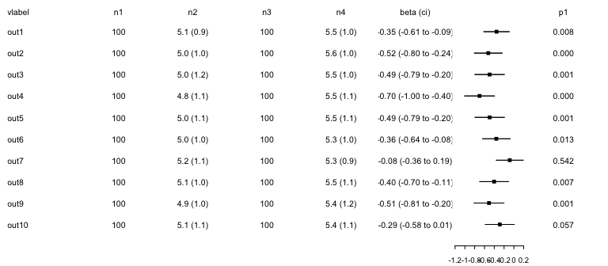
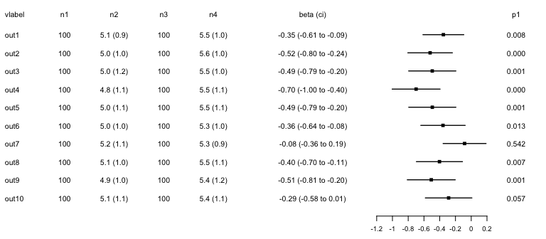
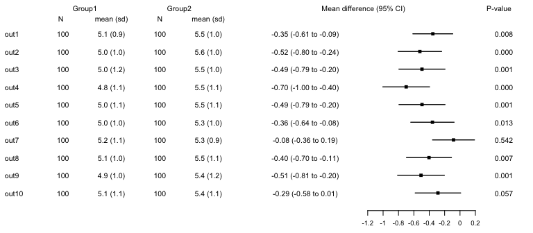
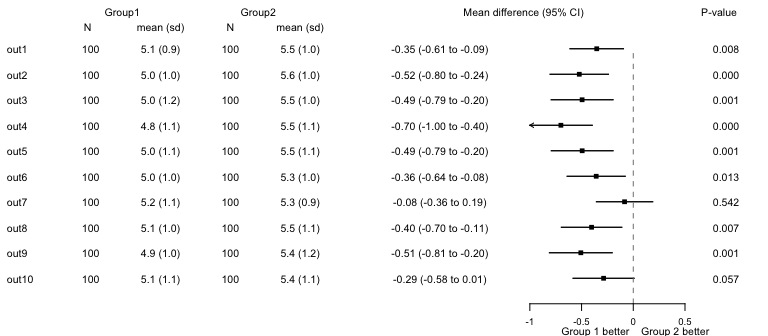
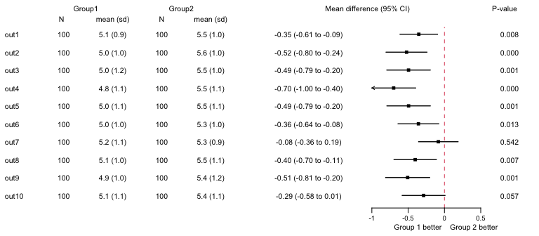
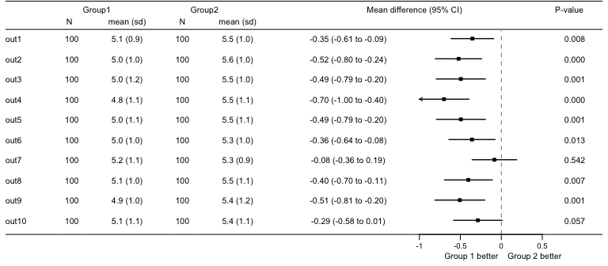
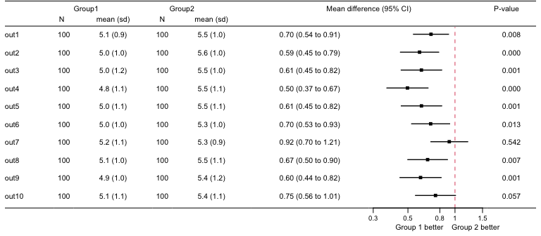

A package to generate forest plots.
Installation
forplot can be installed from github:
# install.packages("remotes")
remotes::install_github("CTU-Bern/forplot")Note that remotes treats any warnings (e.g. that a certain package was built under a different version of R) as errors. If you see such an error, run the following line and try again:
Sys.setenv(R_REMOTES_NO_ERRORS_FROM_WARNINGS = "true")Overview
forpplot and it’s main function fplot needs a data frame with specific column names.
- vlabel: a chr column with the variable labels printed on the left of the forest plot
- nx: any number of chr or num columns numbered sequentially (i.e. n1, n2, n3, …). Printed in that seqence after the column label. May contain the number of observations and/or summary per group.
- beta, beta_lci, beta_uci: three num columns with point estimates and confidence interval to be plotted as forest.
- beta_format: optional chr column with formatted text to be prin§ted along forest, generated from beta if not given.
- px: any number of chr or num columns numbered sequentially (i.e. p1, p2, p3, …), printed on the very right of the plot. May contain p-values.
The package includes an example dataset with 10 variables:
# load package
library(forplot)
# demonstration data
data(forplotdata)
forplotdata
#> vlabel n1 n2 n3 n4 beta beta_lci beta_uci p1
#> 1 out1 100 5.1 (0.9) 100 5.5 (1.0) -0.35330456 -0.6122615 -0.094347655 0.008
#> 2 out2 100 5.0 (1.0) 100 5.6 (1.0) -0.52192832 -0.8044964 -0.239360217 0.000
#> 3 out3 100 5.0 (1.2) 100 5.5 (1.0) -0.49461488 -0.7938491 -0.195380711 0.001
#> 4 out4 100 4.8 (1.1) 100 5.5 (1.1) -0.69983471 -1.0035691 -0.396100319 0.000
#> 5 out5 100 5.0 (1.1) 100 5.5 (1.1) -0.49398774 -0.7928756 -0.195099871 0.001
#> 6 out6 100 5.0 (1.0) 100 5.3 (1.0) -0.35838850 -0.6395674 -0.077209590 0.013
#> 7 out7 100 5.2 (1.1) 100 5.3 (0.9) -0.08429217 -0.3567376 0.188153237 0.542
#> 8 out8 100 5.1 (1.0) 100 5.5 (1.1) -0.40311974 -0.6955442 -0.110695309 0.007
#> 9 out9 100 4.9 (1.0) 100 5.4 (1.2) -0.50709366 -0.8110643 -0.203123036 0.001
#> 10 out10 100 5.1 (1.1) 100 5.4 (1.1) -0.28700316 -0.5822050 0.008198722 0.057The nx columns included the number of observations and descritpives (mean (sd)) for each group, beta is a mean difference, p1 the p-value.
The minimal plot only includes a label and the forest and needs columns vlabel, beta, beta_lci, beta_uci.
We can add the nx and px columns:
fplot(dat=forplotdata)
Set more sensible widths and heights. The widths has to be the same length as the number of columns for the input data plus two for the left and right margin. The length is usually three, header, body and footer.
lwidths<-c(0.05,0.5,0.2,0.8,0.2,0.8,1.2,1.2,0.5,0.05)
lheights<-c(0.14,1,0.08)
fplot(dat=forplotdata,lwidths=lwidths,lheights=lheights)
A header can be given using a character vector the same length as the number of columns of the input data, which then places it above the columns
header<-c("","Group1\nN","Group0\nmean (sd)","Group2\nN","Group2\nmean (sd)",
"Mean difference\n95% CI","","P-value")
fplot(dat=forplotdata,lwidths=lwidths,lheights=lheights,header=header)
The header can also be placed at any x/y position using a list with one element per header line.
header<-list(list(y=0.7,
text=c("Group1","Group2","Mean difference (95% CI)","P-value"),
x=c(0.10,0.32,0.7,0.98)),
list(y=0.3,text=c("N","mean (sd)","N","mean (sd)"),
x=c(0.07,0.18,0.28,0.38)))
fplot(dat=forplotdata,header=header,lwidths=lwidths,lheights=lheights)
A label can be placed below the x-axis using option xtitle. Option ref adds a vertical reference line and xlim specifies the limits for the axis.
xtitle<-list(x=0.86,y=0.2,textl="Group 1 better ",textr=" Group 2 better")
fplot(dat=forplotdata,header=header,lwidths=lwidths,lheights=lheights,
xtitle=xtitle,ref=list(x=0),xlim=c(-1,0.5))
Note that arrows are shown if the limits of the CIs are not included within xlim.
There are further options for the reference line and we can shift the x-axis if the gap at the bottom is too large.
xtitle<-list(x=0.86,y=0.6,textl="Group 1 better ",textr=" Group 2 better")
fplot(dat=forplotdata,header=header,lwidths=lwidths,lheights=lheights,
ref=list(x=0,col=2,extend=2),
xtitle=xtitle,xlim=c(-1,0.5),shift_xaxis=0.3,xlab_line=-0.8)
The points of the forest plots can also be formatted.
set.seed(1345)
ps<-list(pch=16,cex=rnorm(10,2,0.2),col=1)
fplot(dat=forplotdata,header=header,lwidths=lwidths,lheights=lheights,
ref=list(x=0,col=2,extend=2),
xtitle=xtitle,xlim=c(-1,0.5),shift_xaxis=0.3,xlab_line=-0.8,
ps=ps)
Lines at the top and bottom can be added.
fplot(dat=forplotdata,header=header,lwidths=lwidths,lheights=lheights,
ref=list(x=0,col=2,extend=2),
xtitle=xtitle,xlim=c(-1,0.5),shift_xaxis=0.3,xlab_line=-0.8,
headline=2,bottomline=1)
If effect measures are on the log-scale (e.g. for odds ratios), option lscale can be used to indicate that the text should contain the exponentiated values. Axis ticks and labels have to be adapted by hand.
xlab_text<-c(0.3,0.5,0.8,1.0,1.5)
xlab<-log(xlab_text)
xlim<-log(c(min(xlab_text),max(xlab_text)))
fplot(dat=forplotdata,header=header,lwidths=lwidths,lheights=lheights,
ref=list(x=0,col=2,extend=2),
lscale=TRUE,
xtitle=xtitle,shift_xaxis=0.3,xlab_line=-0.8,
xlim=xlim,xlab=xlab, xlab_text=xlab_text,
headline=2,bottomline=1)
Under development
A feature under development is adding a second forest plot (e.g. to show a risk difference and ratio). That needs a beta, beta_lci2 and beta_uci2 column in the dataset (just copied over in the example below). Options xlab2,xlab_text2,xlim2 and xtitle2 are available to format the second plot.
forplotdata2<-forplotdata
forplotdata2$beta2<-forplotdata2$beta
forplotdata2$beta_lci2<-forplotdata2$beta_lci
forplotdata2$beta_uci2<-forplotdata2$beta_uci
forplotdata2<-forplotdata2[,colnames(forplotdata2) != "p1"]
forplotdata2$p1<-forplotdata$p1
lwidths<-c(0.05,0.5,0.2,0.8,0.2,0.8,1.2,1.2,1.2,1.2,0.5,0.05)
lheights<-c(0.14,1,0.08)
fplot(dat=forplotdata2,beta2 = TRUE,
lwidths=lwidths,lheights=lheights,
xlim=c(-1,0.5),xlim2=c(-1,0.5),
headline=2,bottomline=1)